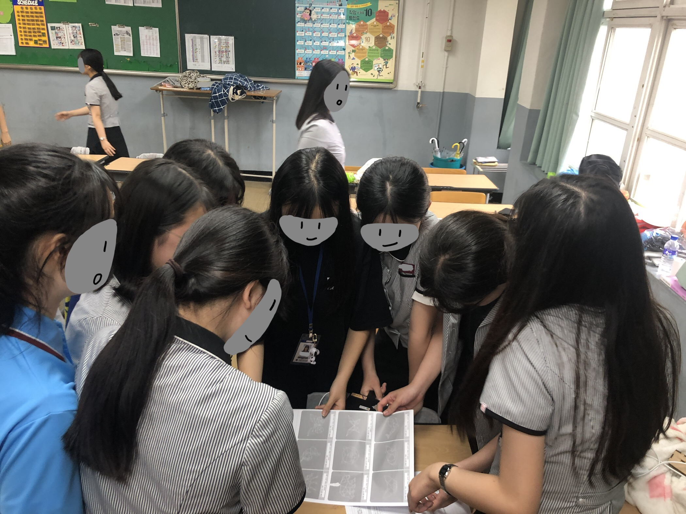
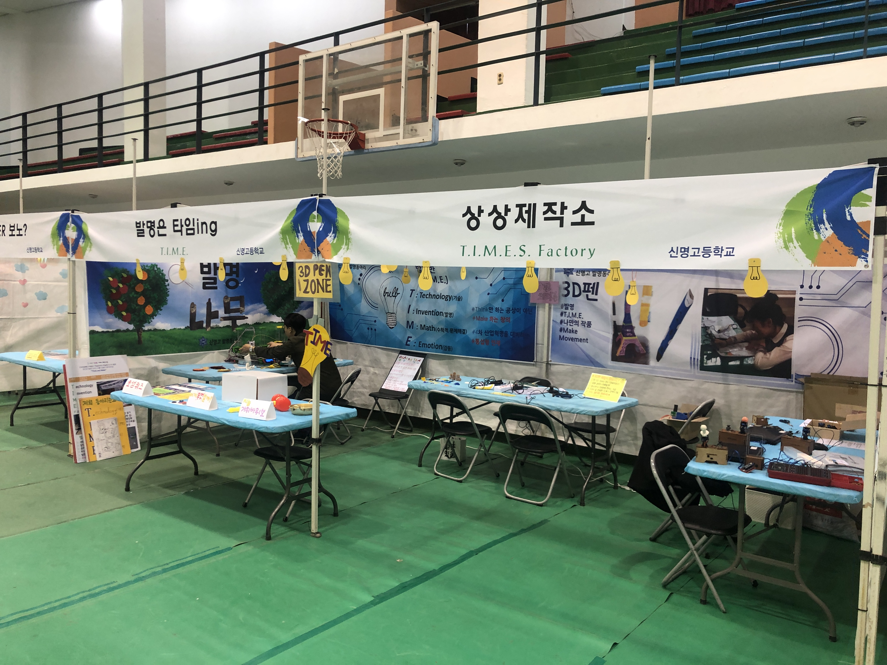

PORTFOLIO
Move your cursor
메카트로닉스공학 → 컴퓨터공학(소프트웨어 디자인)
공대 쪽에 원래 긍정적이어서 처음에는 기계 쪽으로 진학했지만, 코딩에 흥미를 느껴 컴퓨터공학으로 전공을 바꿨습니다. 소프트웨어 디자인을 공부하며 C, C++, HTML, CSS, JavaScript, Python 등을 다뤄봤고, 지금은 보안 분야에 관심이 생겨 관련 분야로 다시 방향을 넓혀가는 중입니다.
SKT ALEPH — AI Infra Enablement 과정
AI 인프라 운영·보안·네트워크와 AI Agent 활용을 실무 중심으로 배우는 SKT 기반 교육 프로그램을 수강하고 있습니다. 아래 6단계 로드맵을 따라가며 실전 프로젝트까지 완성하는 과정입니다.
질문을 클릭하면 답이 타이핑되듯 나타납니다.


이 페이지는 과제 제출을 위해 만들었지만, 앞으로 면접관이나 함께 일하고 싶은 사람들에게 저를 보여주는 포트폴리오로 이어질 페이지입니다.